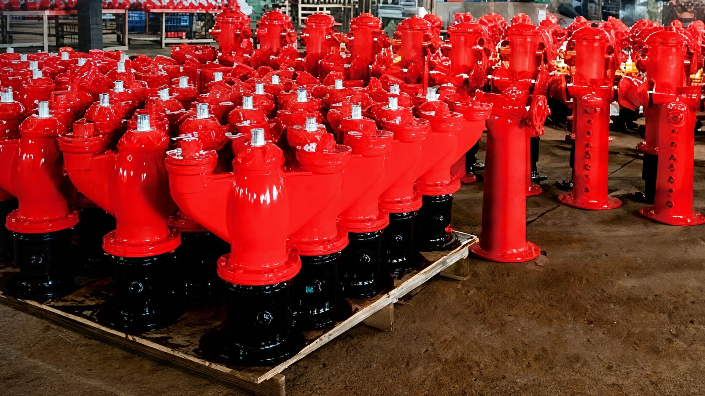
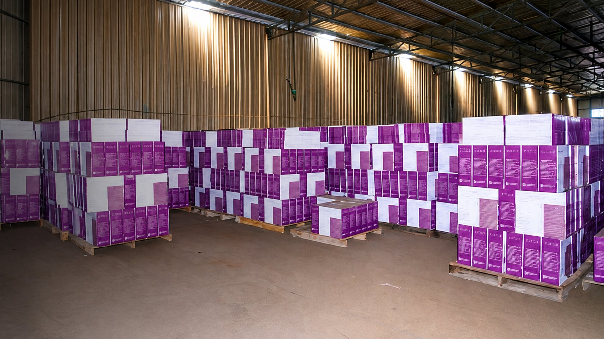

رشاشات الحريق
تكوينات قائمة ومعلقة وجانبية ومخفية، إضافة إلى عائلات الاستخدامات الخاصة. تُراجع درجة الاستجابة ومعامل التدفق والمقاس حسب الموديل.
التفاصيل الفنية بالإنجليزية ←اختر فئة المنتج أولاً، ثم أرسل المقاس والوصلة والوجهة والكمية. تُؤكد المواصفات والوثائق حسب الموديل والسوق المستهدف قبل العرض أو الإنتاج.
تكوينات قائمة ومعلقة وجانبية ومخفية، إضافة إلى عائلات الاستخدامات الخاصة. تُراجع درجة الاستجابة ومعامل التدفق والمقاس حسب الموديل.
التفاصيل الفنية بالإنجليزية ←
صمامات إنذار رطبة وصمامات غمر وإجراء مسبق وأنابيب جافة. يختلف نطاق المقاسات والتجهيزات باختلاف العائلة.
تفاصيل صمام الإنذار الرطب بالعربية ←
صمامات فراشة وبوابة بتكوينات تشغيل وإشراف وتوصيلات مختلفة. تُراجع الفلنجة أو النهاية المحززة وفق طلب المشروع.
صمامات الفراشة بالإنجليزية ←
تكوينات بكرات بخراطيم شبه صلبة وفوهات تدفق مباشر أو نفاث ورذاذ. يُؤكد المقاس والطول والمكونات مع الطلب.
التفاصيل الفنية بالإنجليزية ←
فوهات خراطيم ووصلات ومكونات خطوط الخراطيم للتوريد المنفرد أو ضمن مجموعة. تُراجع الواجهة والأبعاد بحسب السوق.
التفاصيل الفنية بالإنجليزية ←
مخارج مياه حريق داخلية ومكونات متوافقة مع أنظمة صناديق الحريق. تُحدد الوصلة وشكل المخرج من الرسم أو العينة.
التفاصيل الفنية بالإنجليزية ←
تكوينات فوق سطح الأرض لشبكات مياه الحريق. يجب تأكيد نوع السوق والمداخل والمخارج والأبعاد قبل الاختيار.
التفاصيل الفنية بالإنجليزية ←
مجموعات إدخال لتوصيل مصدر مياه خدمة الإطفاء بأنظمة المباني. يُراجع أسلوب التوصيل ومكونات المجموعة حسب المشروع.
التفاصيل الفنية بالإنجليزية ←
إذا لم تجد المنتج المطلوب، أرسل صورة أو رسماً أو جدولاً فنياً للمراجعة. لا يُفترض التوافق قبل التحقق من التفاصيل.
أرسل متطلباتك ←كيف نراجع الطلب
اذكر فئة المنتج والموديل إن وجد، والمقاس الاسمي، ونوع التوصيل، والكمية، وبلد الوجهة، وأي متطلبات للوسم أو العبوة أو الوثائق.
